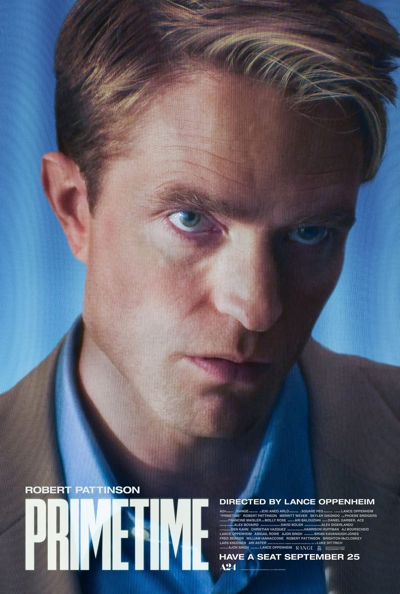

Em destaque
Quatro filmes que continuam comigo.

EM BREVE
Próxima crítica no ar.
Arquivo
Todas as críticas, organizadas por ano.
Sobre
Lá em casa sempre teve cinema. Quando éramos crianças, eu me lembro de assistir Os Trapalhões, mas é uma lembrança vaga de correria, pipoca e pouca atenção. Um pouco mais tarde, papai me carregava para os saudosos cinemas de rua do Méier e da Tijuca. Curtindo a vida adoidado, Os Goonies, De volta para o futuro, A pequena loja dos horrores, E.T., entre tantos outros, mapeou o final da minha infância e inseriu definitivamente os filmes na minha rotina.
Na adolescência, papai abriu uma vídeo-locadora. Eu ia fazer 14 anos e tinha centenas de filmes ao meu alcance. Transitamos do VHS para o DVD. Do DVD para o bluray. Perdemos o fôlego na era dos streamings e torrents. A loja fechou 25 anos depois. Os filmes permaneceram.
Quando eu comecei a compreender a minha relação com a escrita, me pareceu natural que o cinema viesse junto. O Mínimos Óbvios me auxiliou nas crônicas e contos. Aqui a idéia é estender a relação diretamente com os filmes. Profundamente particular. Mas ao alcance da troca, nas discordâncias e nas similaridades.
Egídio La Pasta Jr | RJ | Brasil